Petit Petri — A Petri Net Editor built with Etoys
Petri nets
This web page provides an overview of a Squeak Etoys implementation of a Petri net interpreter.
Petri nets are a well-known mathematical formalism for modeling and reasoning about concurrency. A good place to learn about Petri nets is James Peterson's classic ACM Computing Surveys article from 1997, entitled (surprisingly enough) Petri Nets. If you are in the unibe domain, there is a locally cached copy of the pdf. (Various versions are also accessible from google scholar.)
To try out the interpreter, first download and install Etoys and download Petit Petri. If you unzip the Petit Petri download you will find several Etoys project files containing examples that you can run. Simply start Etoys and drag and drop any of these files onto the running Etoys images.
Alternatively you can run the interpreter directly from your web browser once you have the Etoys browser plug-in installed. (This should be installed automatically when you install Etoys.) Simply follow this link to start the interpreter. (You will be prompted if the plug-in is not installed.)
Quick start
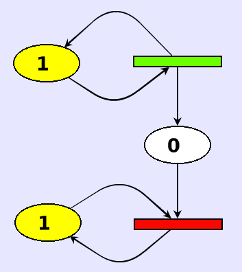With any luck, you should now see in your browser a simple Petri net that looks like this:
The green and red bars are transitions and the numbered ellipses are the input and output places for the transitions. The numbers represent the available tokens in a given place. (Usually these are shown as black dots, but to keep the implementation simple, textual numbers are shown.) Arrows go from input places to transitions and from transitions to output places. A transition may fire if there is at least one token in each of its input places.
In the implementation, firable transitions are highlighted green and disabled (i.e., not firable) transitions are highlighted red. The colours are purely a visual cue and are not part of the Petri net formalism. Similarly places with tokens are highlighted yellow, and empty places are white.
You can fire a transition by clicking on it. This will cause one token to be removed from each input place and one token to be placed in each output place. Try this. If you click slowly, you will see the inputs removed and outputs inserted in two separate stages.
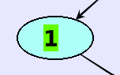 If you want to change the number of tokens in a place, just mouse over the number and edit it. The place will change the highlight colour to blue while you are editing. When you leave the place, the highlight will switch to yellow or white, and the connected transitions will be updated to red or green, as appropriate.
Building your own nets
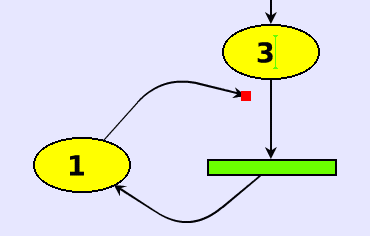 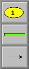 You can rewire the net by grabbing either end of an arrow and dropping it into another place or transition. (Perhaps you already accidentally did this when you were trying to click on a transition!) Make sure you connect places to transitions and not places to places or transitions to transitions. The interpreter doesn't check for nonsense!
If you want more places, transitions or arrows, you can get them from the factory. Just click, drag and drop.
You might prefer to start from a clean slate. You can close the running Petri net interpreter and open a Petri net factory without any existing net.
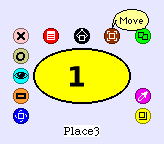 To move an existing object, you should "right-click" on an object (possibly using a META key on your keyboard). This will bring up a bunch of mysterious looking handles on the selected object. You can mouse over the handles to see what they do.
Try to build the following Petri net model of a bounded buffer. The blue rectangles represent the producer and the consumer. The places in between represent the numbers of full and empty slots. 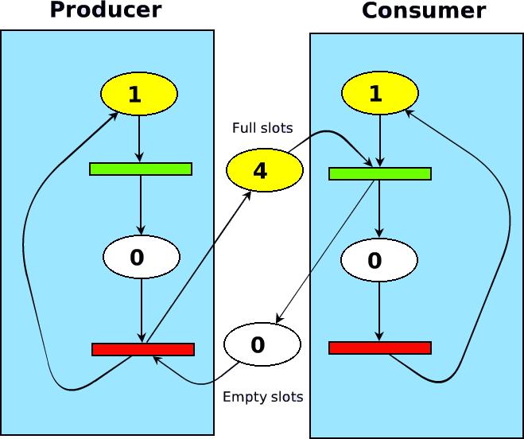
NB: The blue rectangles are just blue rectangles. If you want them, you can get them from the Supplies flap. Right-click and use the yellow handle to resize them. Use the red menu handle to send them to the background.
Etoys implementation
The entire implementation consists of nine simple scripts for places and transitions. To access the scripts, right-click on a place or a transition and click the little blue eye.
Here we see that transitions have 4 scripts. A mouseDown event will trigger the input script, which tell all the input places (tellAllPredecessors) to decrement themeselves.
| 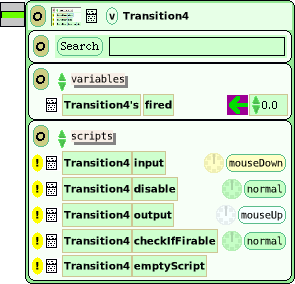 |
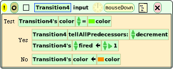 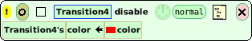 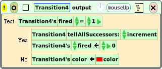 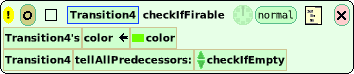 |
Switching to the places, we see that the decrement script triggers the checkIfEmpty script, which in turn will disable the following transition if the place is empty.
Now, if we mouseUp on the transition, the output script will be triggered, which increments each of the successor places. The increment script fires the checkIfFirable script of its successor transitions. The transition will then optimistically set its colour to green, and then trigger the checkIfEmpty script of all of its input places.
| 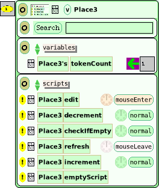 |
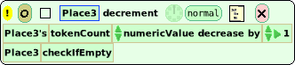 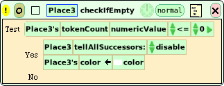 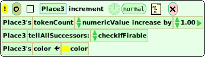 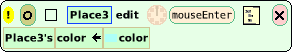 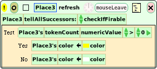 |
The only remaining scripts are the edit and refresh scripts of places, which update the colour of a place while we edit the token count. When we are done editing, the checkIfFirable script is run on all successor transitions.
Acknowledgments
Thanks to Markus Gälli for implementing the first version of the interpreter, and for taking the time to show me how to use Etoys.